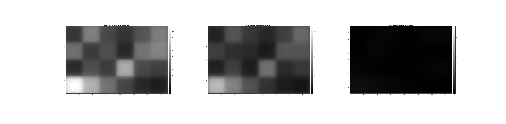
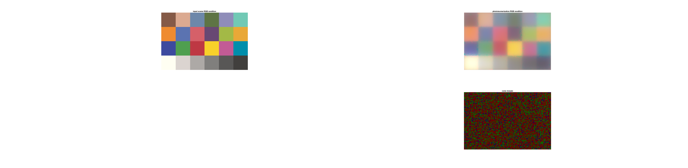

function t_coneMosaicDemosaicResponses
doPhotocurrent = false;
if (doPhotocurrent)
subplotRows = 2;
else
subplotRows = 1;
end
scene = sceneCreate;
scene = sceneSet(scene, 'h fov', 1.0);
oi = oiCreate('human');
oi = oiCompute(oi, scene);
cMosaicOBJ = coneMosaic();
cMosaicOBJ.setSizeToFOV([sceneGet(scene, 'h fov'), sceneGet(scene, 'v fov')]);
cMosaicOBJ.noiseFlag = 'none';
[~, currentsMap] = cMosaicOBJ.compute(oi,'currentFlag',doPhotocurrent);
[demosaicedIsomerizationsMaps, sRGB] = cMosaicOBJ.demosaicedIsomerizationMaps();
if (doPhotocurrent)
demosaicedPhotoCurrentMaps = cMosaicOBJ.demosaicedPhotoCurrentMaps(currentsMap);
end
hFig = figure(1); clf;
set(hFig, 'Position', [10 10 1340 470]);
cLims = [min(demosaicedIsomerizationsMaps(:)) max(demosaicedIsomerizationsMaps(:))];
subplot(subplotRows,3,1);
imagesc(squeeze(demosaicedIsomerizationsMaps(:,:,1,1)), cLims);
title('Lcone isomerization demosaiced map');
colorbar()
axis 'image';
subplot(subplotRows,3,2);
imagesc(squeeze(demosaicedIsomerizationsMaps(:,:,2,1)), cLims);
title('Mcone isomerization demosaiced map');
colorbar()
axis 'image';
subplot(subplotRows,3,3);
imagesc(squeeze(demosaicedIsomerizationsMaps(:,:,3,1)), cLims);
title('Scone isomerization demosaiced map');
colorbar()
axis 'image';
if (doPhotocurrent)
cLims = [min(demosaicedPhotoCurrentMaps(:)) max(demosaicedPhotoCurrentMaps(:))];
subplot(subplotRows,3,4);
imagesc(squeeze(demosaicedPhotoCurrentMaps(:,:,1,1)), cLims);
title('Lcone photocurrent demosaiced map');
colorbar()
axis 'image';
subplot(subplotRows,3,5);
imagesc(squeeze(demosaicedPhotoCurrentMaps(:,:,2,1)), cLims);
title('Mcone photocurrent demosaiced map');
colorbar()
axis 'image';
subplot(subplotRows,3,6);
imagesc(squeeze(demosaicedPhotoCurrentMaps(:,:,3,1)), cLims);
title('Scone photocurrent demosaiced map');
colorbar()
axis 'image';
end
colormap(gray);
drawnow;
hFig = figure(2); clf;
set(hFig, 'Position', [10 10 1470 990])
subplot(2,2,1);
imshow(sceneGet(scene, 'RGB'));
title('input scene RGB rendition');
subplot(2,2,2);
imshow(sRGB(:,:,:,1));
title('photoisomerization RGB rendition');
subplot(2,2,4);
uData = cMosaicOBJ.plot('cone mosaic', 'hf', 'none');
imagesc(uData.mosaicImage); axis off; axis image;
title('cone mosaic');
end
 